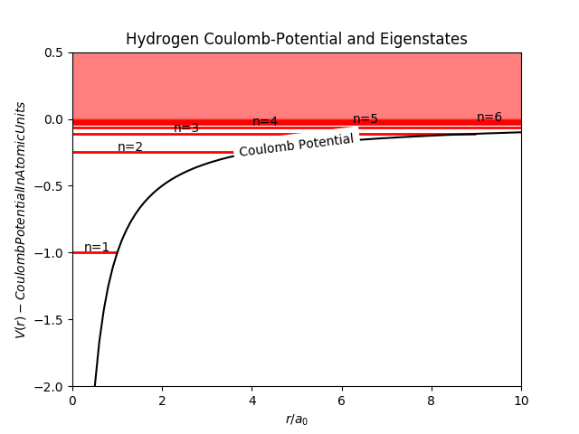

Bound-States Meson (Pion)
\(\leftarrow\) Back to Science articles \(\leftarrow\)
( words)
This Article focuses on Dyson-Schwinger Equations and Behte-Salpeter Equations and subsequently solving these Equations numerically, specifically for a Pion.

The picture above shows the Bethe-Salpeter Equation of the Pion in a rainbow-ladder truncation scheme
(the one wiggly line with a blob indicates it is a RL-truncation).
But why on Earth should we worry about the Bethe-Salpter Equation and what is it?
Well, calm down a bit. First, let me start by introducing you to this functional method. The Dyson-Schwinger and Bethe-Salpeter
approach to Quantum Field Theory (and QCD) is a non-perturbative continuum approach. Meaning, the DSEs/BSEs provide a coverage of the
quark mass all the way from the chiral limit to the heavy quark range.
The general Schroedinger Equation in three coordinates looks like:
$$ i \hbar \frac{\partial \Psi(x,t)}{\partial t} = - \frac{\hbar^2}{2 m}\bigtriangledown^2 \Psi(x,t) + V(x)\Psi(x,t) \notag \\
=\hat{H}\Psi(x,t).$$
where \(x = (x_1, x_2, x_3)\) for convenience.
In our case, the Schrödinger Equation is time-independent, as the Potential \(V(x)\) for the Hydrogen-Atom does not change in time.
Therefore we get \(n\) stationary states \(\Psi_n(x)\), each of which is now assigned with a specific Energy \(E_n\). Thus Equation above reduces to
$$ \hat{H}\Psi_n(x) = - \frac{\hbar^2}{2 m}\bigtriangledown^2 \Psi_n(x) + V(x)\Psi_n(x)\\
= E_n\Psi_n(x).$$
Furthermore, the Potential of the hydrogen atom is spherically symmetrical and only dependent on \( |x| \).
Now, we rewrite the whole equation in spherical coordinates and separate it into a radial Schrödinger Equation (\(rSE\))
and an angular Schrödinger Equation. \(\Psi(x) \rightarrow \Psi(r,\theta,\phi) = R(r)Y(\theta,\phi) \).
$$ \Big\{ \frac{\partial}{\partial r} \Big( r^2 \frac{\partial}{\partial r} R(r)\Big) - \frac{2 m r^2}{\hbar^2}\Big(V-E\Big)R(r)\Big\}\\
+ \frac{1}{Y(\theta,\phi)}\Big\{ \frac{1}{\sin[2](\theta)} \frac{\partial }{\partial \theta} \sin(\theta) \frac{\partial}{\partial \theta}Y(\theta,\phi) + \frac{1}{\sin[2](\theta)} \frac{\partial^2}{\partial^2 \phi}Y(\theta,\phi) \Big\}\\
= 0. $$
It follows, that the angular part of the Schrödinger Equation is equal for all spherically symmetrical potentials.
So the Potential is only dependent on the radial coordinate \(r\) (and only affects \(R(r)\)).
Hence, one is interested in the solution of the radial Schrödinger Equation.
One can now set the \(rSE = l(l+1) = c\) and the angular part \( = - l(l+1) = -c\), where \(c\) is a constant and \(l\) is an integer number
representing the orbital quantum number (Eigenvalue of the \(L^2\) operator).
$$ \frac{\partial}{\partial r} \Big( r^2 \frac{\partial}{\partial r} R(r)\Big) - \frac{2 m r^2}{\hbar^2}\Big(V-E\Big)R(r) = l(l+1)\, R(r). $$
With the substitution \(R(r)=\frac{u(r)}{r}\) the Equation now writes
$$ - \frac{\hbar^2}{2 m} \frac{\partial^2 u(r)}{\partial^2r} + \Big[V(r) + \frac{\hbar^2}{2 m} \frac{l(l+1)}{r^2}\Big]\,u(r) = E\,u(r). $$
Like mentioned above, the potential itself is a Coulomb-Potential \(V(r) = - \frac{e^2}{4\pi\,\epsilon_0} \frac{1}{r}\).
To make things easier, it makes sense to look at the problem in the units of the bohr-radius \(a_B= \frac{4 \pi\epsilon_0\hbar^2 }{m\,e^2}\)
and the Rydberg-Energy \(\big(E_R = \frac{\hbar^2}{2\,m\, a_B^2} = 13.6 \, eV \big)\) and to introduce a new variable \(\rho = \frac{r}{a_B}\).
$$ \Big(-\frac{\partial^2}{\partial^2 \rho} - \frac{2}{\rho} + \frac{l(l+1)}{\rho^2}\Big)u(\rho) = E_n \, u(\rho) \\
= -\frac{1}{n^2}\, u(\rho).$$
with \( n \in \mathbb{N},\; -\frac{E_n}{E_R}= \frac{1}{n^2}\).
An ansatz for the solution is
$$ u_{nl}(\rho) = e^{\sqrt{E_n}\,\rho} \rho^{l+1} \sum_{k}^{N} a_k\rho^k.$$
with \(n=N+l+1\).
The ansatz inserted into the radial Schrödinger Equation gives the following result(s):
$$ R_{nl}(r)= \frac{u_{nl}(r)}{r}= \sqrt{\frac{2}{n}^3 \frac{(n-l-1)!}{2n[(n+l)!]^3}} e^{-\frac{r}{n}} \frac{2\,r}{n}^l\;L^{2l+1}_{n-l-1}(\frac{2r}{n}).$$
With \(L\) being the Laguerre-Polynomials and as above in units of \(a_B\) and \(E_R\).